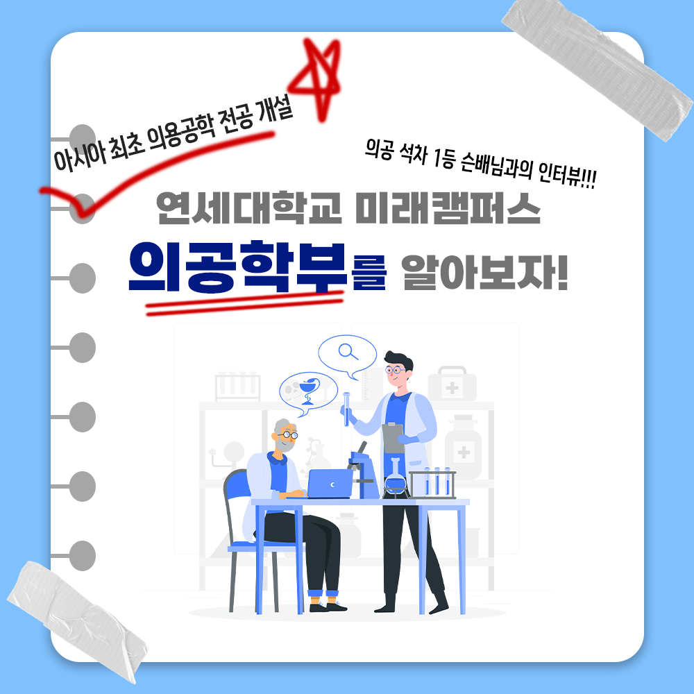
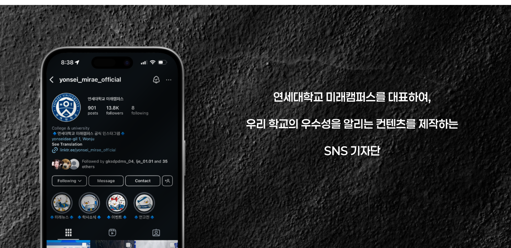
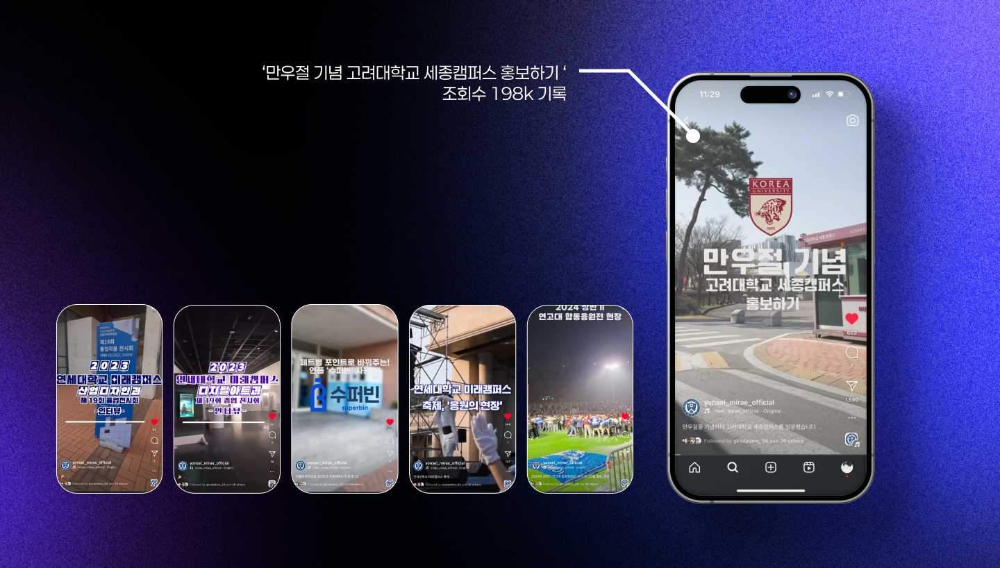
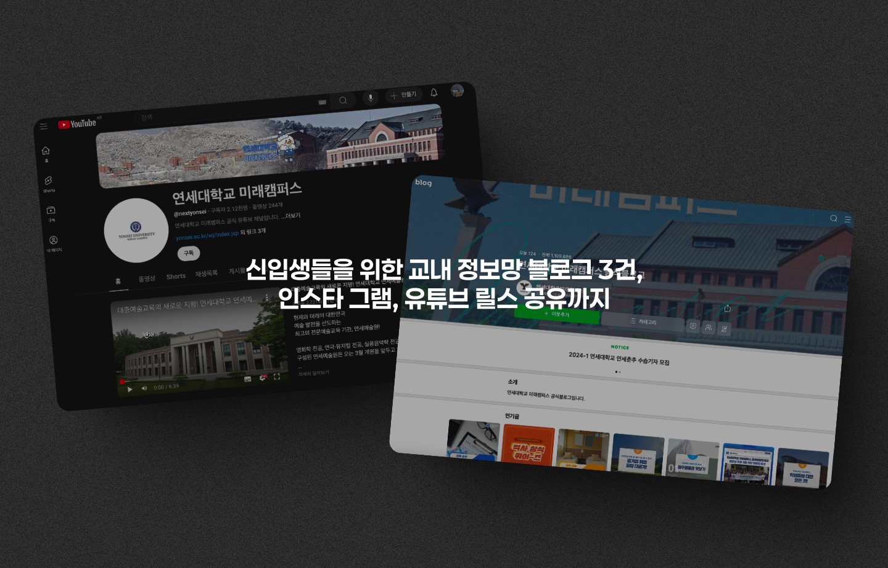

연세대학교 미래캠퍼스의 강점을 소개하는 콘텐츠를 기획하고 제작했습니다. 카드뉴스, 쇼츠, 블로그 포스트를 포함합니다.
영상 · 카드뉴스 · 2023.10 - 2025.03
SNS기자단
연세대학교 미래캠퍼스를 대표하여, 우리 학교의 우수성을 알리는 컨텐츠를 제작하는 SNS 기자단

소규모 팀의 일원으로 학교 공 SNS 계정을 관리했습니다.
캠퍼스 생활과 학생 이야기를 반영하는 콘텐츠 캘린더와 테마를 개발했습니다.
Main Visuals
작업물 구성

① 기자단 콘텐츠 슬라이드
연세대학교 미래캠퍼스 SNS기자단의 다양한 카드뉴스 콘텐츠를 한눈에 볼 수 있는 슬라이드 배너입니다.

② 인스타그램 공식 계정
SNS기자단

③ 릴스 영상 198K 조회수 달성
SNS기자단

④ 멀티 플랫폼 콘텐츠
SNS기자단
Process
- 캠퍼스 생활과 학생 이야기를 반영하는 콘텐츠 캘린더 및 테마 개발
- 약 18개 주제에 걸쳐 200개 이상의 카드 디자인, 비주얼 일관성 유지하면서 새로운 레이아웃 실험
- 모바일 시청에 최적화된 세로 영상 및 숏폼 콘텐츠 편집
- 카피라이팅부터 썸네일 디자인까지 소셜 미디어 브랜딩 전략 수립 및 실행
Highlights
- 대학과 예비/재학 간의 지속적인 커뮤니케이션에 기여
- 학교 SNS를 위한 재사용 가능한 템플릿 및 비주얼 자산 라이브러리 구축
- 200개 이상의 카드뉴스 제작 (18개 주제)
- 릴스 영상 198K 조회수 달성으로 학교 인지도 향상
Gallery